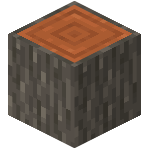
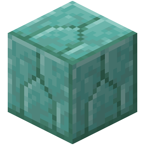

My Favorite Overworld Blocks
1. Acacia Wood

- Reason why:
- There is just something about the orange and grey combination for this type of wood. The orange pairs well with most other wood colors, and also blends with all types of stone for a rustic look.
2. Grass Block

- Reason why:
- This is an incredibily diverse block with its ability to be practical for helping build houses and other structures but also for a floor in my house. The sound the grass block makes when walking on it is a staple of Minecraft and is music to my ears.
3. Prismarine Bricks

- Reason why:
- This block pairs well with white/grey concrete or quatz blocks. When making modern styled houses, I love using this block for a slash of color in an otherwise dull house.